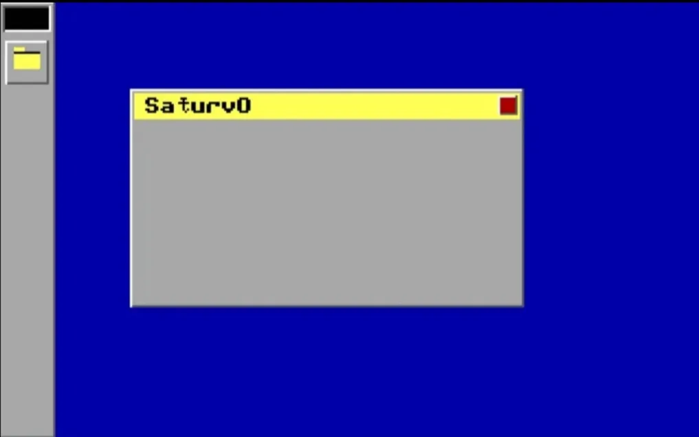
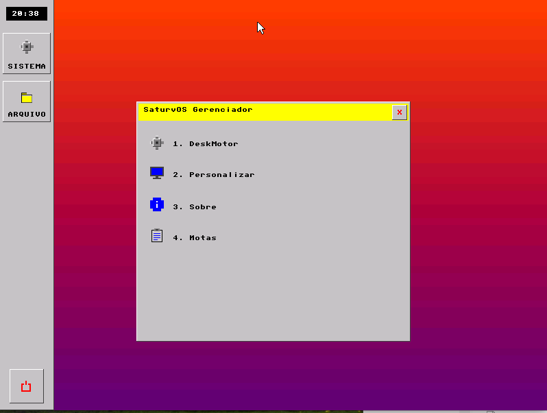

SaturvOS
"O Castelo Virtual de um Príncipe de Baixo Nível."
## Baixar
Versão Alpha 0.5 "Castle" (Assembly e C). Rode no QEMU, Bochs ou VirtualBox.
Baixar SaturvOS.IMGFORMATO: .IMG | BOOTABLE: YES
## Registros
"5 anos de isolamento social. Sem contatos profundos. Encontrei a verdadeira sabedoria nestas linhas de código."
Tornei-me um Príncipe de Baixo Nível. No Ring-0, eu sou o soberano. Enquanto o mundo se perde no superficial, meu único incentivo de viver é o reinado de Saturv e a beleza da sua arquitetura pura.

MEMÓRIA_16BIT
ASCENSÃO_32BIT## O Arquiteto
João V. Gabriel (PWRAT). Arquiteto do SaturvOs.


## Comentários
## Tributo
Alimente o desenvolvimento diretamente na masmorra:
APOIAR_VIA_LIVEPIX